<!DOCTYPE lake>
<h2 data-lake-id="rQy2o" id="rQy2o"><span data-lake-id="uf1571a84" id="uf1571a84">学习目标</span></h2><ol list="u35c82c3e"><li data-lake-id="ue413a2bc" fid="ua7e24d14" id="ue413a2bc"><span data-lake-id="u03c2e472" id="u03c2e472">掌握hal库开发流程</span></li><li data-lake-id="uf2e1fc5c" fid="ua7e24d14" id="uf2e1fc5c"><span data-lake-id="ubab23192" id="ubab23192">掌握STMCubeMX配置过程</span></li><li data-lake-id="u243bad71" fid="ua7e24d14" id="u243bad71"><span data-lake-id="ue830dd8e" id="ue830dd8e">掌握API查询和使用方式</span></li></ol><h2 data-lake-id="WwgSy" id="WwgSy"><span data-lake-id="ud8e32704" id="ud8e32704">学习内容</span></h2><h3 data-lake-id="UfNPc" id="UfNPc"><span data-lake-id="u5ee3bf7a" id="u5ee3bf7a">需求</span></h3><p data-lake-id="u1cb0e042" id="u1cb0e042"><span data-lake-id="u7b29ba7d" id="u7b29ba7d">点灯LED1</span></p><p data-lake-id="uae5d8d61" id="uae5d8d61">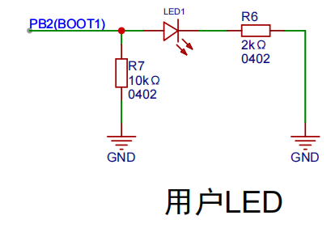</p><p data-lake-id="u3814ae1d" id="u3814ae1d"><br/></p><h3 data-lake-id="gHTow" id="gHTow"><span data-lake-id="u07320f3d" id="u07320f3d">开发流程</span></h3><ol list="ua231ec93"><li data-lake-id="ub227a17f" fid="ua82ea350" id="ub227a17f"><span data-lake-id="u71e14c09" id="u71e14c09">新建项目</span></li><li data-lake-id="u007687bf" fid="ua82ea350" id="u007687bf"><span data-lake-id="ub05ab7e6" id="ub05ab7e6">芯片配置</span></li><li data-lake-id="ud99c984a" fid="ua82ea350" id="ud99c984a"><span data-lake-id="ud9d3752a" id="ud9d3752a">编写代码</span></li><li data-lake-id="u66ef8d6b" fid="ua82ea350" id="u66ef8d6b"><span data-lake-id="u4d92ddac" id="u4d92ddac">测试调试</span></li></ol><h3 data-lake-id="IuDfU" id="IuDfU"><span data-lake-id="u77bac036" id="u77bac036">项目创建</span></h3><ol list="u8dc91832"><li data-lake-id="ud48b54c0" fid="ude950c69" id="ud48b54c0"><span data-lake-id="ue39e8b74" id="ue39e8b74">新建项目</span></li></ol><p data-lake-id="udaa00a67" id="udaa00a67" style="padding-left: 2em">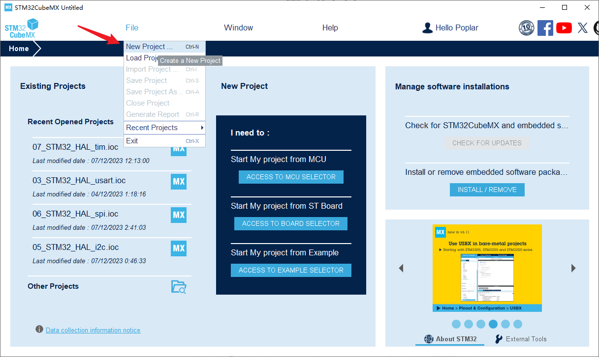</p><ol list="u5321cb59" start="2"><li data-lake-id="u4006ad71" fid="u36d49d32" id="u4006ad71"><span data-lake-id="ub406383f" id="ub406383f">选择芯片: 输入自己使用的芯片, 开始工程配置。</span></li></ol><p data-lake-id="u48aec11e" id="u48aec11e" style="padding-left: 2em">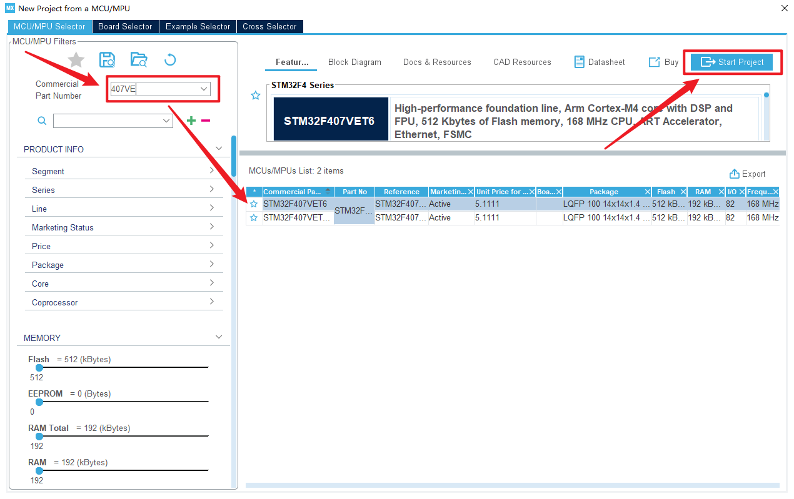</p><p data-lake-id="u3b3c1d9c" id="u3b3c1d9c" style="padding-left: 2em"><br/></p><h3 data-lake-id="fL0bG" id="fL0bG"><span data-lake-id="u0702bb13" id="u0702bb13">芯片配置</span></h3><h4 data-lake-id="P2LeS" id="P2LeS"><span data-lake-id="uc05047c2" id="uc05047c2">功能配置</span></h4><p data-lake-id="u37ae002e" id="u37ae002e"><span data-lake-id="ua0088f05" id="ua0088f05">这里需求是点灯，配置相对简单。</span></p><ol list="ud63db965"><li data-lake-id="u869e9eb6" fid="ua029a621" id="u869e9eb6"><span data-lake-id="u501773e9" id="u501773e9">来到引脚配置页面。</span></li></ol><p data-lake-id="ue355a82d" id="ue355a82d" style="padding-left: 2em">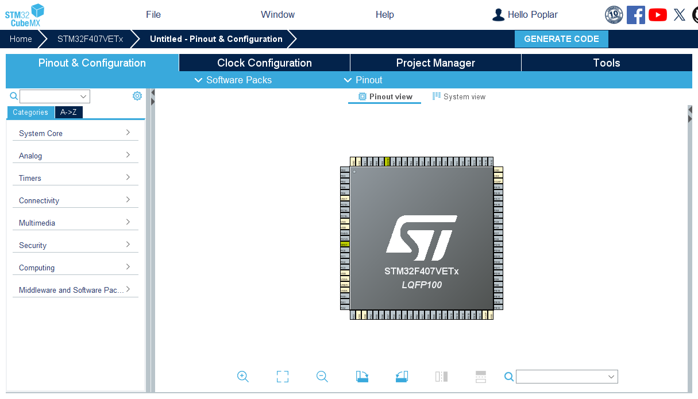</p><ol list="u3326c74d" start="2"><li data-lake-id="u8cf1f550" fid="ub7a5fce6" id="u8cf1f550"><span data-lake-id="ub21db2e8" id="ub21db2e8">找到具体的引脚。以点灯的PB2为例，左键单击</span></li></ol><p data-lake-id="uc50ac4d8" id="uc50ac4d8" style="padding-left: 2em">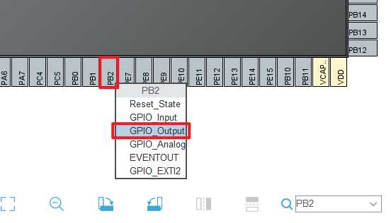</p><ol list="uc7b2d0a7" start="3"><li data-lake-id="u70736982" fid="ub18d28b3" id="u70736982"><span data-lake-id="u20513ada" id="u20513ada">配置功能。单击引脚。</span></li></ol><p data-lake-id="u70dd668b" id="u70dd668b" style="padding-left: 2em">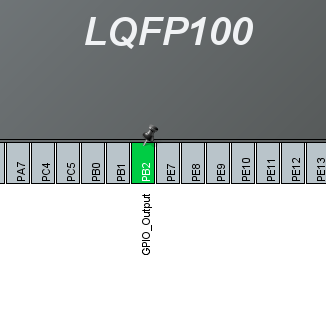</p><h4 data-lake-id="PD4qh" id="PD4qh"><span data-lake-id="uac62ece3" id="uac62ece3">时钟配置</span></h4><p data-lake-id="u1452b462" id="u1452b462"><span data-lake-id="u6d15211d" id="u6d15211d">添加高速外部时钟</span></p><p data-lake-id="u6c8235b1" id="u6c8235b1">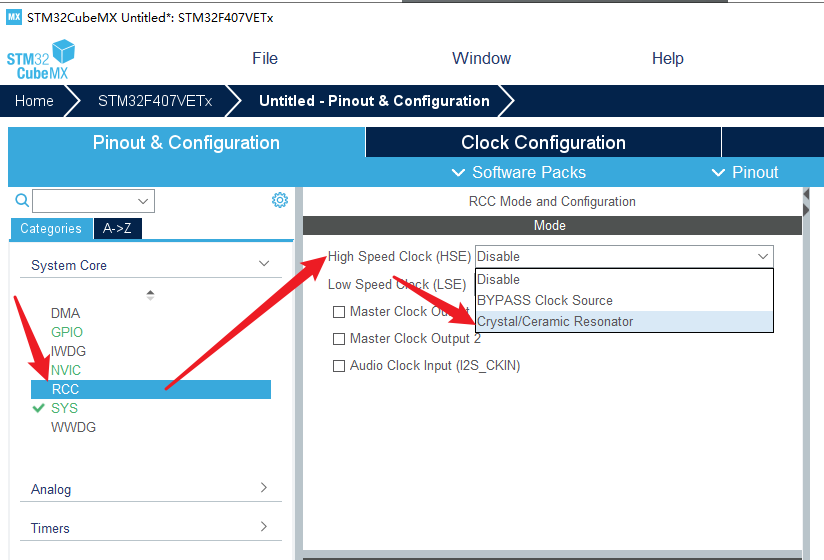</p><p data-lake-id="u99e4c4f7" id="u99e4c4f7"><span data-lake-id="u81c923ed" id="u81c923ed">切换到Clock Configuration, 配置外部晶振为8M及芯片主频168</span></p><p data-lake-id="u8c354d30" id="u8c354d30">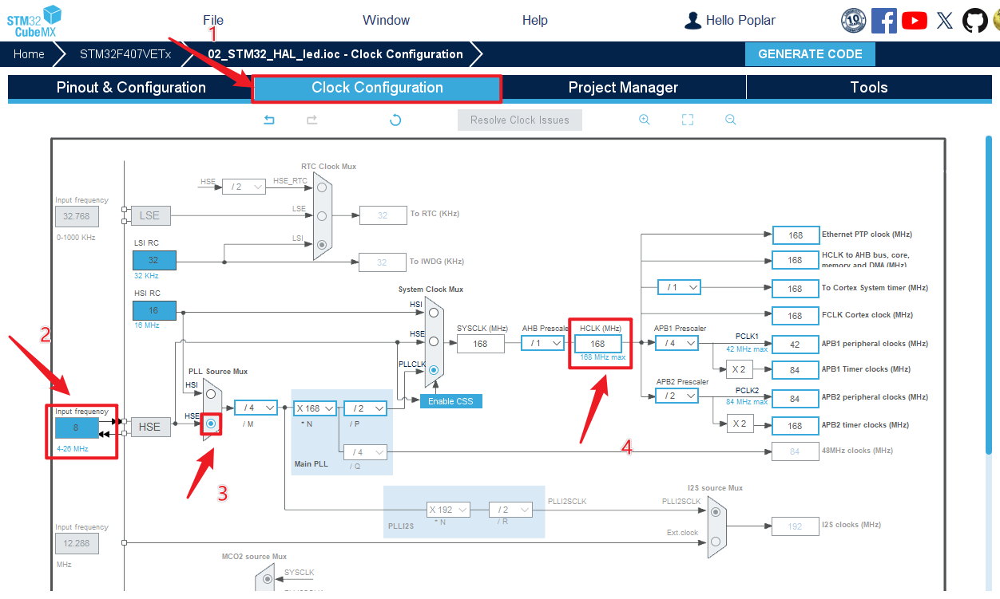</p><p data-lake-id="ud32d12ff" id="ud32d12ff"><br/></p><h4 data-lake-id="Sdm9S" id="Sdm9S"><span data-lake-id="uf1f80bf7" id="uf1f80bf7">项目配置</span></h4><ol list="u71ba07b1"><li data-lake-id="u6b5a3a5a" fid="u55cb2142" id="u6b5a3a5a"><span data-lake-id="u8a483bf6" id="u8a483bf6">项目基本配置</span></li></ol><p data-lake-id="u661f6963" id="u661f6963"><span data-lake-id="u4f44a292" id="u4f44a292">在Project Manager的Project选项卡里配置如下内容:</span></p><ul list="u32c56fb7"><li data-lake-id="u2b8bb267" fid="u62cdb6fc" id="u2b8bb267"><span data-lake-id="u63e3b416" id="u63e3b416">工程名称Project Name	  -&gt; 填写一个不包含中文和空格的目录名</span></li><li data-lake-id="u064addfb" fid="u62cdb6fc" id="u064addfb"><span data-lake-id="u9815a158" id="u9815a158">工程路径Project Location -&gt; 选择一个不包含中文和空格的文件路径</span></li><li data-lake-id="uedfa9773" fid="u62cdb6fc" id="uedfa9773"><span data-lake-id="u56e31104" id="u56e31104">工具链/IDE  -&gt; 选择MDK-ARM</span></li></ul><p data-lake-id="uff30f6b2" id="uff30f6b2" style="text-indent: 2em">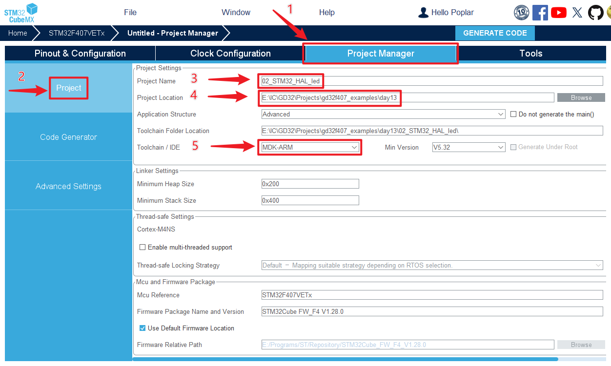</p><p data-lake-id="u7a198083" id="u7a198083"><span data-lake-id="u687cf9a6" id="u687cf9a6">选择固件包版本，如果没有安装最新版本，不需要使用最新版本</span></p><p data-lake-id="uf15798b7" id="uf15798b7">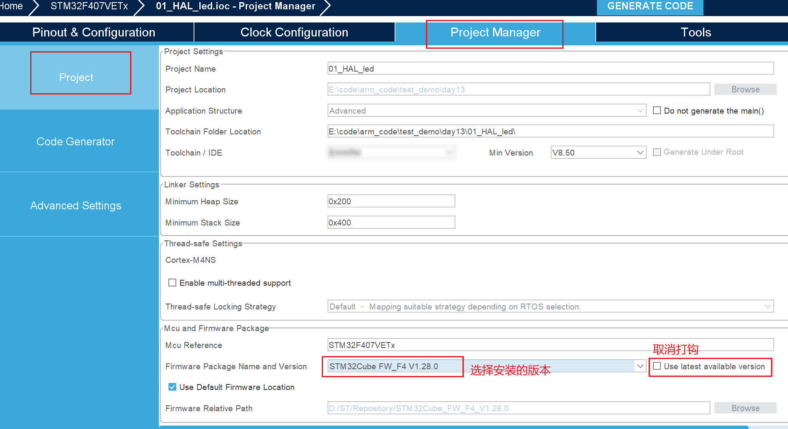</p><p data-lake-id="u1875d81f" id="u1875d81f" style="text-indent: 2em"><br/></p><ol list="uc3a19552" start="2"><li data-lake-id="ub6227128" fid="ua2891788" id="ub6227128"><span data-lake-id="u522487e9" id="u522487e9">代码生成配置</span></li></ol><p data-lake-id="ua4c51730" id="ua4c51730" style="padding-left: 2em">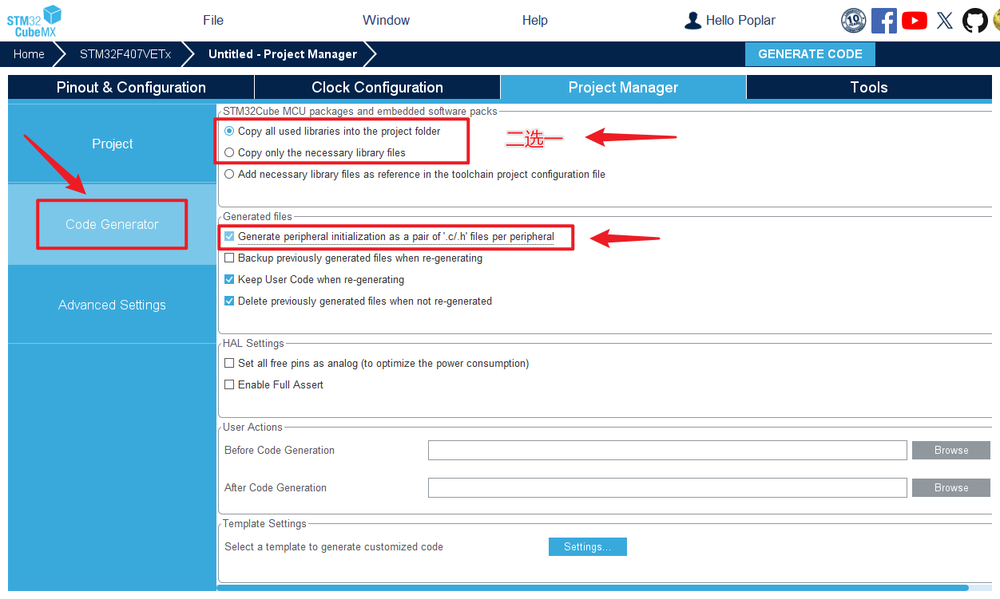</p><ol list="ue51c1a81" start="3"><li data-lake-id="u522c5df0" fid="u6f9a6915" id="u522c5df0"><span data-lake-id="u70a288c5" id="u70a288c5">生成代码</span></li></ol><p data-lake-id="ud82a64e2" id="ud82a64e2" style="text-indent: 2em">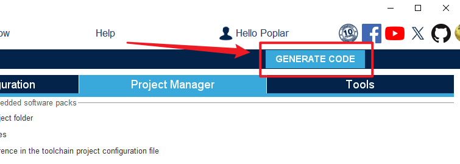</p><ol list="u44c28d48" start="4"><li data-lake-id="ucbaa2234" fid="u8d06d7b8" id="ucbaa2234"><span data-lake-id="uae5ebd77" id="uae5ebd77">生成完成后。</span></li></ol><p data-lake-id="u13f9ce1f" id="u13f9ce1f" style="padding-left: 2em"></p><p data-lake-id="u1d3c7a5c" id="u1d3c7a5c" style="padding-left: 2em"><span data-lake-id="uf50ef8bc" id="uf50ef8bc">点击打开项目。会用keil打开。</span></p><p data-lake-id="ucf49f84b" id="ucf49f84b"><br/></p><p data-lake-id="uba08a0a8" id="uba08a0a8"><br/></p><blockquote class="lake-alert lake-alert-color4" data-lake-id="u7776ce70" id="u7776ce70"><p data-lake-id="u886ea43c" id="u886ea43c"><span data-lake-id="u32df18fc" id="u32df18fc">如果你上一步环境搭建没有完成，这里会出现次状况：需要下载依赖。建议回到上一步，进行离线的开发包安装（除非你访问国外的网络非常快，可以直接在这里下载）</span></p><p data-lake-id="u077b8812" id="u077b8812" style="padding-left: 2em"></p><p data-lake-id="uccd244f1" id="uccd244f1" style="padding-left: 2em"></p><p data-lake-id="uc917e695" id="uc917e695" style="padding-left: 2em"></p></blockquote><p data-lake-id="u79507c30" id="u79507c30"><br/></p><p data-lake-id="u0744ed63" id="u0744ed63" style="padding-left: 2em"><span data-lake-id="ua58a4d43" id="ua58a4d43">​</span><br/></p><h3 data-lake-id="ASRre" id="ASRre"><span data-lake-id="u58ac6c05" id="u58ac6c05">编写代码</span></h3><p data-lake-id="uf4ff98fd" id="uf4ff98fd"><span data-lake-id="u66ec0b7c" id="u66ec0b7c">自动生成代码结构如下:</span></p><p data-lake-id="u0223f1e6" id="u0223f1e6"></p><p data-lake-id="u69b1e650" id="u69b1e650"><span data-lake-id="u3c894151" id="u3c894151">我们对main.c进行编辑：</span></p><span class="yuque-card-unsupported">[codeblock]</span><p data-lake-id="u59ca75a1" id="u59ca75a1"><span data-lake-id="u0cf9bdd0" id="u0cf9bdd0">插入gpio控制代码</span></p><p data-lake-id="u6a375305" id="u6a375305"><span data-lake-id="ua0240ce1" id="ua0240ce1">​</span><br/></p><h3 data-lake-id="qpWAt" id="qpWAt"><span data-lake-id="u5d6e5939" id="u5d6e5939">编译测试</span></h3><p data-lake-id="ubeece2d4" id="ubeece2d4"><span data-lake-id="u9e144026" id="u9e144026">和SPL库一样，进行编译，烧录，看效果。</span></p><p data-lake-id="u378742f6" id="u378742f6"><span data-lake-id="u52f87488" id="u52f87488">​</span><br/></p><h3 data-lake-id="t8geh" id="t8geh"><span data-lake-id="ucaf4fea7" id="ucaf4fea7">烧录失败解决</span></h3><p data-lake-id="ud025c5d6" id="ud025c5d6"><span data-lake-id="u3908fce2" id="u3908fce2">如果烧录时，弹出如下提示，并且无法烧录：</span></p><p data-lake-id="ufe449d63" id="ufe449d63">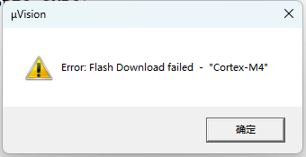</p><p data-lake-id="ua67ea087" id="ua67ea087"><span data-lake-id="uf23e2e3b" id="uf23e2e3b">按照如下路径进行添加</span><code data-lake-id="u8bf2b279" id="u8bf2b279"><span data-lake-id="u1cd5b5f7" id="u1cd5b5f7">Flash Programming Algorithm</span></code><span data-lake-id="u13960fbe" id="u13960fbe">即可解决：</span></p><p data-lake-id="uafeec316" id="uafeec316">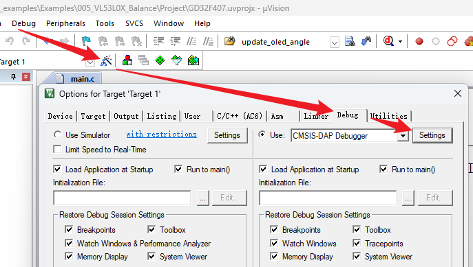</p><p data-lake-id="ua7bc15d4" id="ua7bc15d4"><br/></p><p data-lake-id="u8df8b806" id="u8df8b806"><span data-lake-id="ua637bbb0" id="ua637bbb0">在</span><code data-lake-id="u3fa4c4af" id="u3fa4c4af"><span data-lake-id="uc6ecf3ab" id="uc6ecf3ab">Flash Download</span></code><span data-lake-id="u39cbe96c" id="u39cbe96c">里添加</span><code data-lake-id="u93ab5a4a" id="u93ab5a4a"><span data-lake-id="u8c03d21c" id="u8c03d21c">Programming Algorithm</span></code></p><p data-lake-id="ubdedfa43" id="ubdedfa43">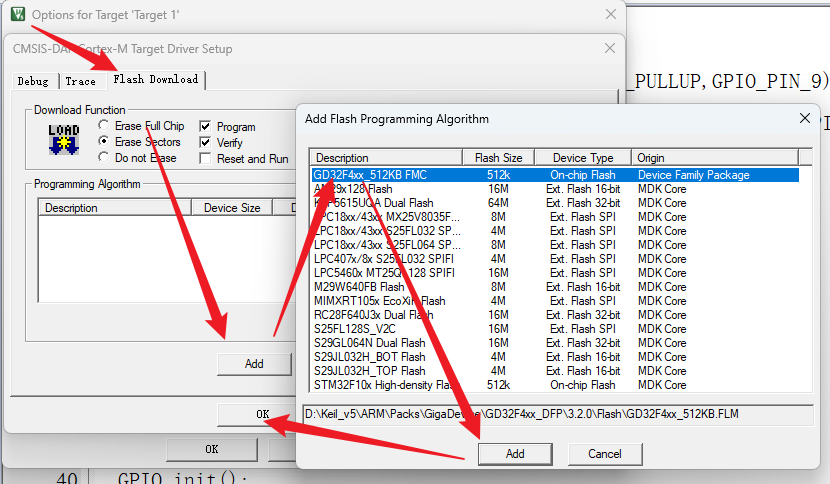</p><p data-lake-id="u43615d0c" id="u43615d0c"><span data-lake-id="u410253ee" id="u410253ee">添加后效果如下：</span></p><p data-lake-id="u87eac3e4" id="u87eac3e4">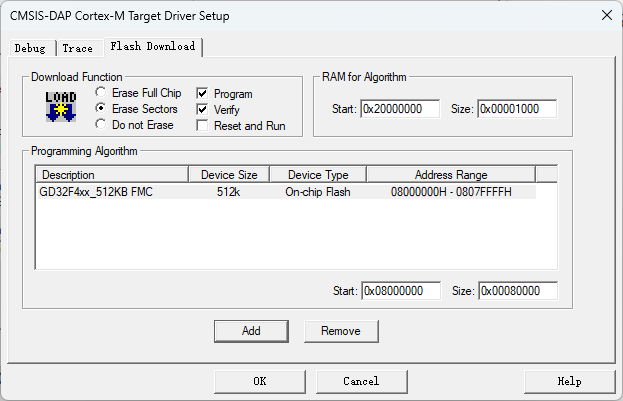</p><h2 data-lake-id="AiJT7" id="AiJT7"><span data-lake-id="u7ee8bcc0" id="u7ee8bcc0">练习</span></h2><ol list="u3308fd5b"><li data-lake-id="u83a05806" fid="u6f34ac9d" id="u83a05806"><span data-lake-id="udf2057b9" id="udf2057b9">实现hal库点灯</span></li></ol>